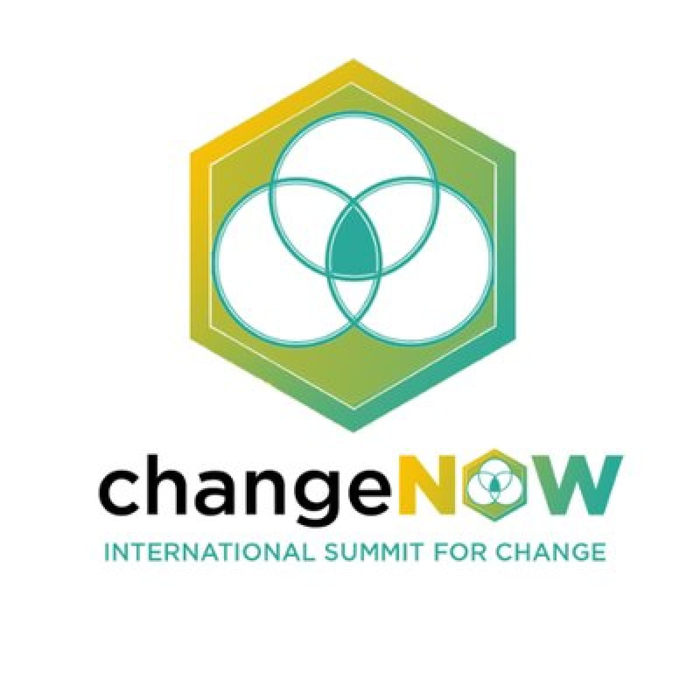

ChangeNOW, le plus grand rassemblement d’innovations pour la planète, se tiendra cette année sous un format 100% numérique du 27 au 29 mai 2021. Pendant 3 jours, le sommet met en lumière les solutions les plus concrètes et innovantes : plus de 1000 solutions, 500 speakers et 120 pays réunis pour faire face aux plus grands challenges environnementaux et climatiques.
Greenspector sera bien sûr présent comme en 2020 en tant qu’exposant de sa solution unique et innovante pour mesurer/analyser la consommation des services numériques. Pour cette édition, Greenspector a signé un partenariat avec ChangeNow et EcoAct et réalisera aux côtés d’EcoAct, acteur historique de la lutte contre le changement climatique, une estimation de l’empreinte carbone de l’évènement.
Pour cela, Greenspector mesurera la consommation en énergie – ressources de la plateforme web et mobile de l’évènement et estimera également l’impact carbone des sites web de l’ensemble des partenaires de l’évènement. Ces mesures, réalisées sur appareils réels grâce à l’outil Greenspector Test Runner, seront accessibles aux différents acteurs de l’évènement depuis notre site web sous la forme de tableaux de bord ou classements.
En 2021, climat, ressources, biodiversité, inclusion… sont autant de défis dont les réponses ne peuvent être décalées. Alors à tous les changemakers, investisseurs, médias, grands groupes, institutionnels ou encore talents… rejoignez-nous et de nombreux acteurs du changement pour créer des synergies et accélérer ensemble la transition !
En tant que partenaire de l’évènement, Greenspector est fier de vous offrir une réduction de 30% pour l’achat d’un pass « Business » avec le code : GREENSPECTORNOW2021.
Je m’inscris à ChangeNOW